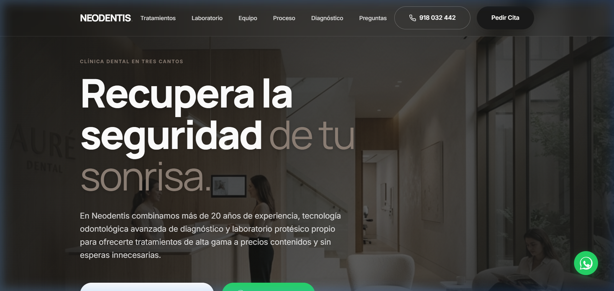

Neodentis
Clínica dental con más de 20 años de trayectoria cuya presencia digital no reflejaba su autoridad real ni transmitía confianza al paciente.
Transformaciones
- De web corporativa genérica a experiencia centrada en la confianza
- De formularios tradicionales a captación progresiva sin fricción
- De autoridad supuesta a autoridad demostrada con casos clínicos reales
Next.js
React
TypeScript
Framer Motion
IA
